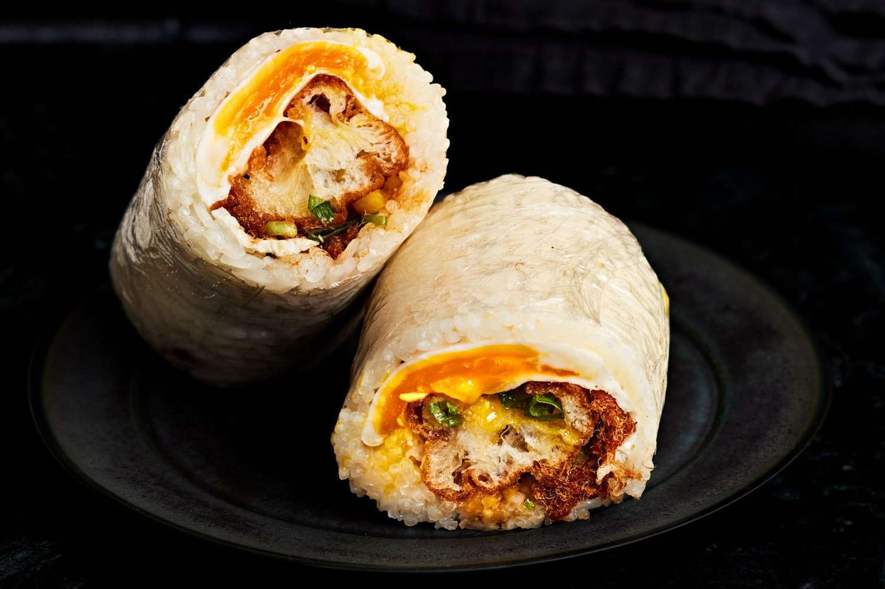

Back to Home
Fan Tuan (Stuffed Sticky Rice Roll)

Description
Fan Tuan 飯糰 or 粢饭 (Cī fàn) is a delicious stuffed rice roll that is popular in Taiwan and Shanghai.
It is often eaten as a breakfast or lunch on-the-go and typically serves with a warm bowl of soymilk.
Ingredients
- 3-4 cups cooked sushi rice
- 7 oz [200g] firm tofu
- 1 cup [140g] chopped Gailan stems
- 1 piece YouTiao
- 1/2 cup [80g] salted preserved dried radish
- 1/2 cup finely shredded purple cabbage
- 1 tablespoon soy sauce
- a drizzle of dark soy sauce for color optional
- toasted sesame seeds
- crushed peanuts optional
- oil for cooking
- salt to taste
- sugar
Steps
Prepare Filling
- To prepare the salted preserved radish, soak them in cold water for 30 mins, then rinse.
- Sauté them in a pan with some oil for 1 min, season with 1/2 teaspoon sugar (omit if using sweetened dried radish/skip this step if using pickles)
- To make the tofu, heat a non-stick pan with 3 teaspoons oil, sauté mashed tofu until golden brown and season with soy sauce. Set aside.
- Using the same pan, sauté Gailan stems until fully cooked through & season with salt. Set aside.
- Cut YouTiao into 3-inch long and bake at 350F until crispy, about 5-8 mins.
How to wrap Fan Tuan
- To make the stuffed rice rolls, wrap a paper towel or sushi mat with a layer of plastic wrap or wax paper.
- Lay the wrapped mat or paper towel on a flat surface, then sprinkle with a pinch of sesame seeds.
- Scoop about 3/4 cup of rice and place onto the surface, on top of the sesame seeds.
- Using a silicon or rice spatula, spread the rice to a thin layer by pressing the rice down into a rectangular shape.
- Add a heaping spoon of tofu in the middle and top with youtiao.
- Add a tablespoon of greens, cooked preserved radish, and purple cabbage. Top with a heaping spoon of crushed peanuts if preferred.
- Now, lift both sides of the wrapper up and use your finger to push the filling onto the rice.
- Bring the long sides to the middle and fold them in a hot dog style. Use the side of the wrapper to push both ends so the rice sticks together. (think of how you wrap a candy)
- Then, twist both ends several times so the rice roll is packed like a log. Tip: Transfer roll to a wrap, tighten & keep it wrapped while cutting or serving.
- Sprinkle with more toasted sesame seeds on the outer layer. Serve warm.